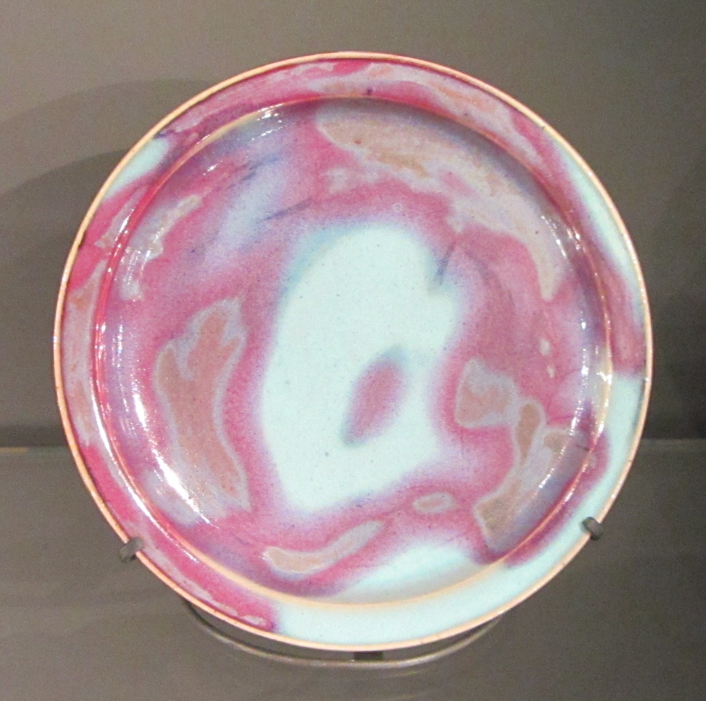
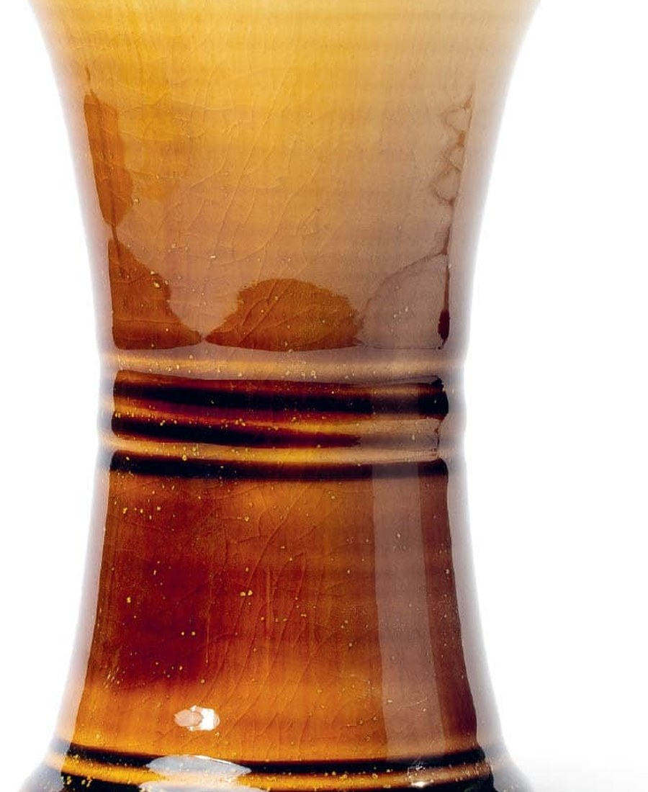
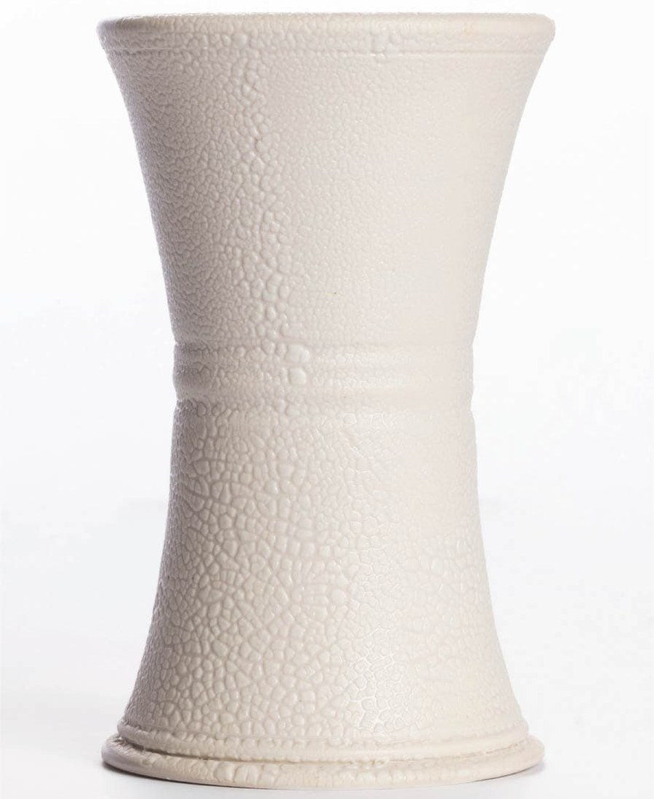
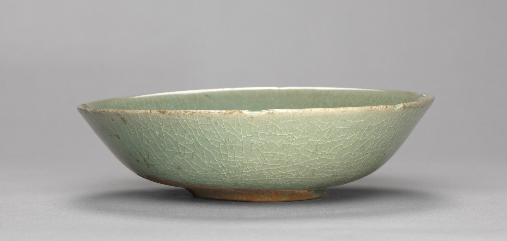
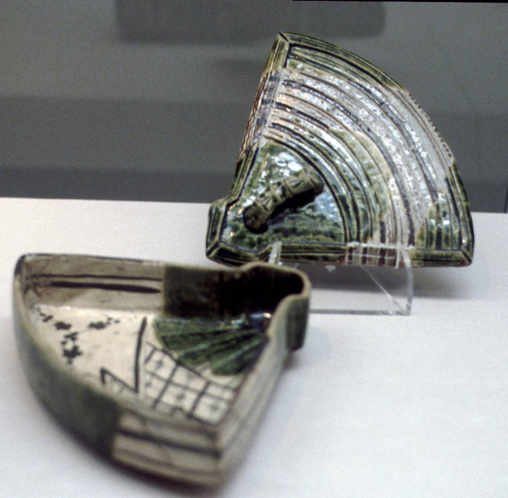
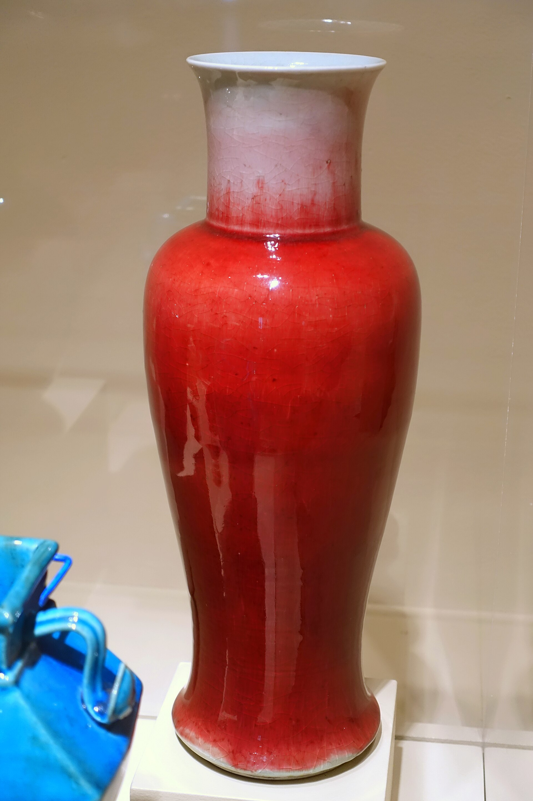
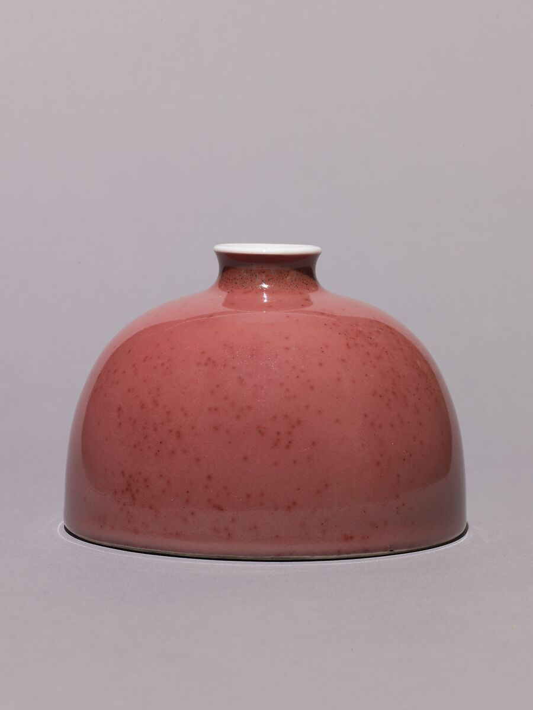

Yellow over blue is not automatically green. Oxides dissolve, crystallise, volatilise and change oxidation state inside the combined melt.
Room I · The Stained-Glass Atlas
The glaze atlas 0
Explore colours on digital cone previews made from cropped source photographs. Open a card for the original photograph, recipe and history. Previews illustrate a surface; they are not photographs of fired cones.
records in this corridor
Explore glaze families and terminology
The Glazy map · 69-page source indexed
One colour can hide several chemistries.
Glazy deliberately mixes colour, oxide mechanism, historic family, surface and firing process: 21 root glaze types, 79 nodes and 64 terminal categories. This museum map gathers them into 16 visual galleries without pretending they are one mutually exclusive scale. Click a term to search the Cathedral’s verified records; an empty result marks a real catalogue gap. Page ranges refer to the supplied Clay & Glaze Types PDF.
Adapted with attribution from Glazy · Clay & Glaze Types ↗, CC BY-NC-SA 4.0.
Room II · The Recipe Library
A cookbook that remembers where every recipe came from.
Open a structured formula below, or search recipe pages across the supplied books. The calculator is available for structured records.
A study wing of the Recipe Library
The Layering Laboratory.
A glaze over another glaze is a new chemical system—not paint mixing. Plan both directions, vary thickness deliberately, and let fired evidence decide.
01 · CHOOSE TWO COMPATIBLE GLAZES
then
↓
↓
These are real photographs of each glaze fired alone. The overlap diagram below records application order; it does not pretend to predict the fired result.
A over B can behave differently from B over A because the layers contact clay, air and each other differently.
A fluid layer can pull, pool, break or push through a stiffer one. Added thickness can also make a previously stable glaze run.
Always fire each glaze alone beside both overlap directions. Without witnesses, you cannot tell what the interaction changed.
Method inspiration: Matthieu Liévois’ visual planning and systematic layering practice at Créamik ↗. This laboratory is an original teaching interface, not a reproduction of his page.
The floor plan
Eight rooms. One connected craft.
Curated routes through the collection
What brought you here today?
Like a museum, the cathedral has more than one entrance. Begin with wonder, a practical job, a failure, or a question.

COLOUR FIRST · 10 MINUTESI saw a surface I cannot forget.
Walk the colour wall, open a glaze book, then follow its related family.
Enter the Stained-Glass Atlas →
MAKE A TEST · 20 MINUTESI want to layer two glazes.
Build a six-tile comparison that separates chemistry from guesswork.
Open the Layering Laboratory →
READ THE EVIDENCE · 8 MINUTESSomething went wrong in the kiln.
Identify the defect, understand its mechanism, and choose one useful next test.
Visit the Restoration Room →
LEARN THE CRAFT · A LIFETIMEI want to become a ceramic wizard.
Follow the apprentice path from clay geology to chemistry, firing, diagnosis and durable functional ware.
Begin the learning path →The Apprentice Path
Learn in the order the material demands.
Every lesson ends with something Eleonora can test, recognise and remember.
Room III · The Kiln Chapel
The atmosphere is an ingredient.
Focused lesson · Copper reduction
Green copper can become ruby red—but “more reduction” is not the recipe.
Oxidation, reduction and later reoxidation change copper’s chemical state and the particles that form inside the glaze. Base chemistry, glaze thickness, clay, reduction onset, peak heatwork and cooling all decide whether copper reads green, clear, liver-brown, blush pink or red.



What reduction means
A fuel-burning kiln has less available oxygen than the flame requires. The atmosphere draws oxygen from glaze and body compounds. Electric kilns normally oxidise unless they are specifically designed for another atmosphere.
What to record
Use witness cones. Log reduction onset and strength, pressure or oxygen reading, kiln position, glaze thickness, clay body, peak heatwork and the whole cooling path.
What to test
Use separate firings to compare reduction onset. Keep a green oxidation witness. Change copper or tin only after the atmosphere comparison, never all variables together.
What can go wrong
Too little reduction may leave green; excessive or badly timed reduction can muddy or liver the red. Reoxidation and cooling can erase, shift or develop colour. There is no universal schedule.
Continue with John Britt’s Peach Bloom experiments ↗ and Glazy’s atmosphere and glaze-type concepts ↗.
Room IV · The Materials Archive
Stop memorising bags.
Learn what they contribute.
A recipe lists materials; a glaze balances oxides. The bridge between those views is where control begins.
Room V · The Restoration Room
Read a failure as evidence.
Start with what you can actually see
Room VI · The Hall of Masters
No glaze arrives without a lineage.
Some surfaces belong to communities and kiln traditions rather than one inventor. Where attribution is uncertain, the cathedral says so.
Room VII · Eleonora’s Notebook
Your own collection begins with one surface.
Save glaze books and layering plans. Favourites remain on this device, ready to become labelled test tiles and kiln notes.
Room VIII · The Reading Room
sources. pages. One navigable memory.
The source ledger is visible. “Inventoried” means present and readable; “recipe-indexed” means a formula has been structured and cited; “taxonomy-indexed” means its knowledge hierarchy is navigable. The cathedral never calls a source absorbed before it has earned the word.
sources on these shelves